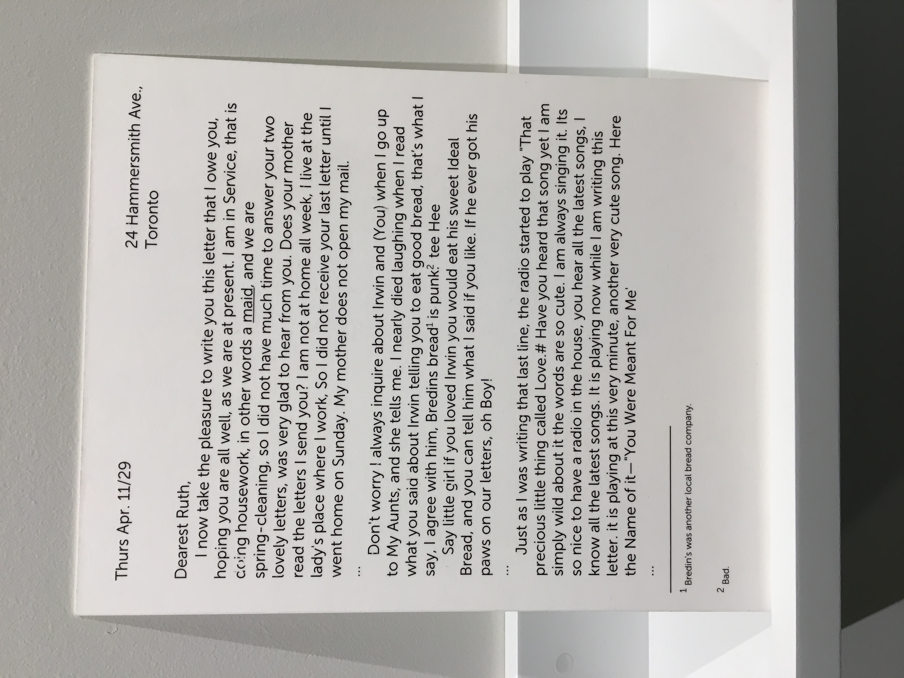
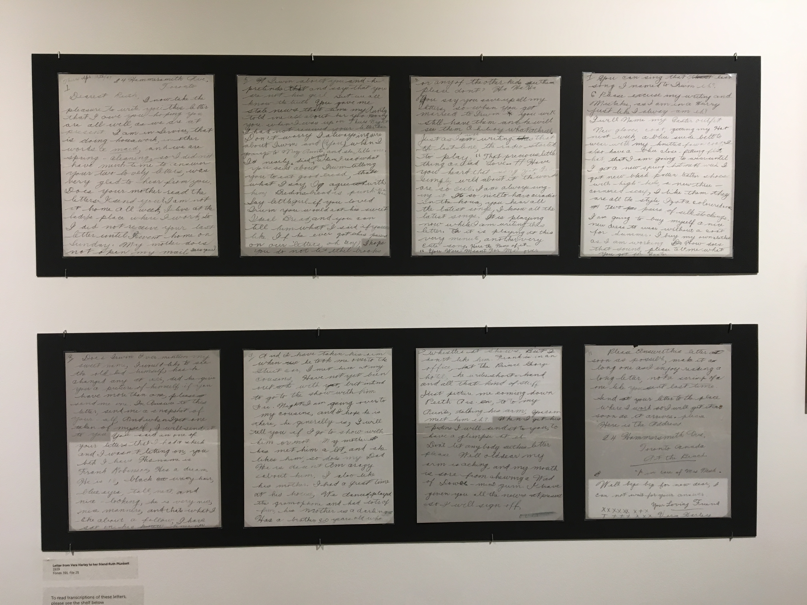
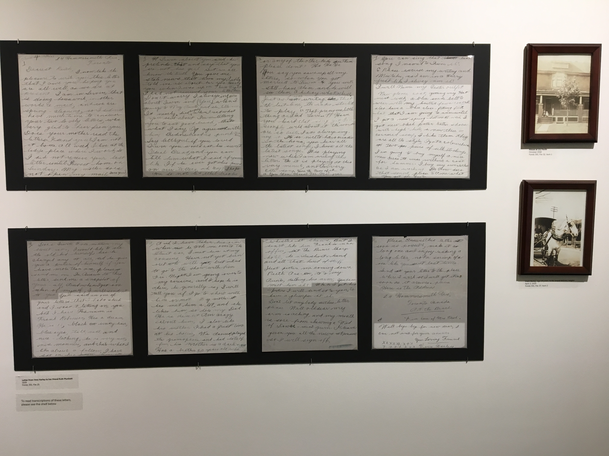
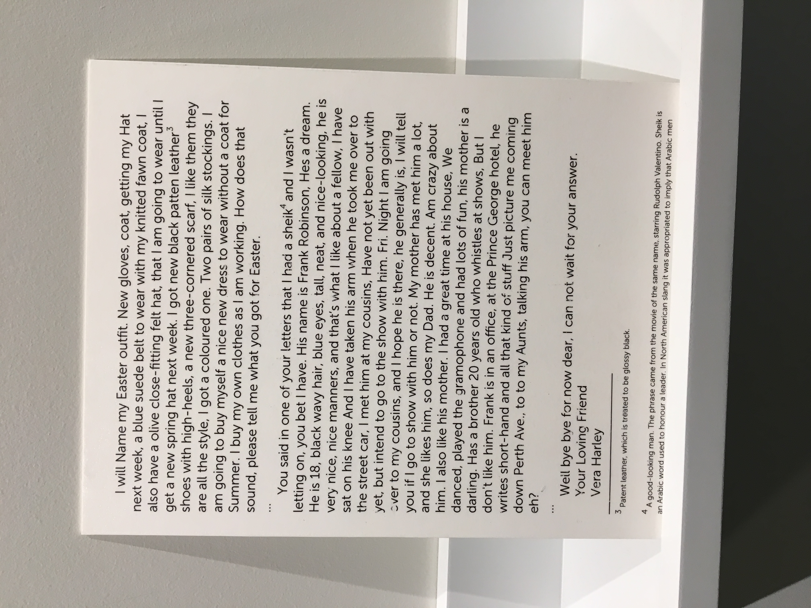
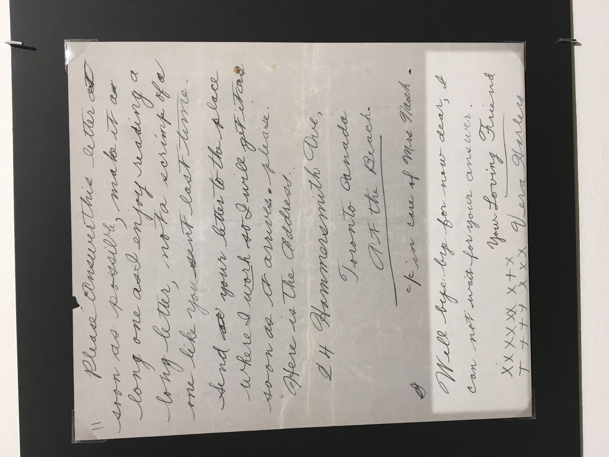
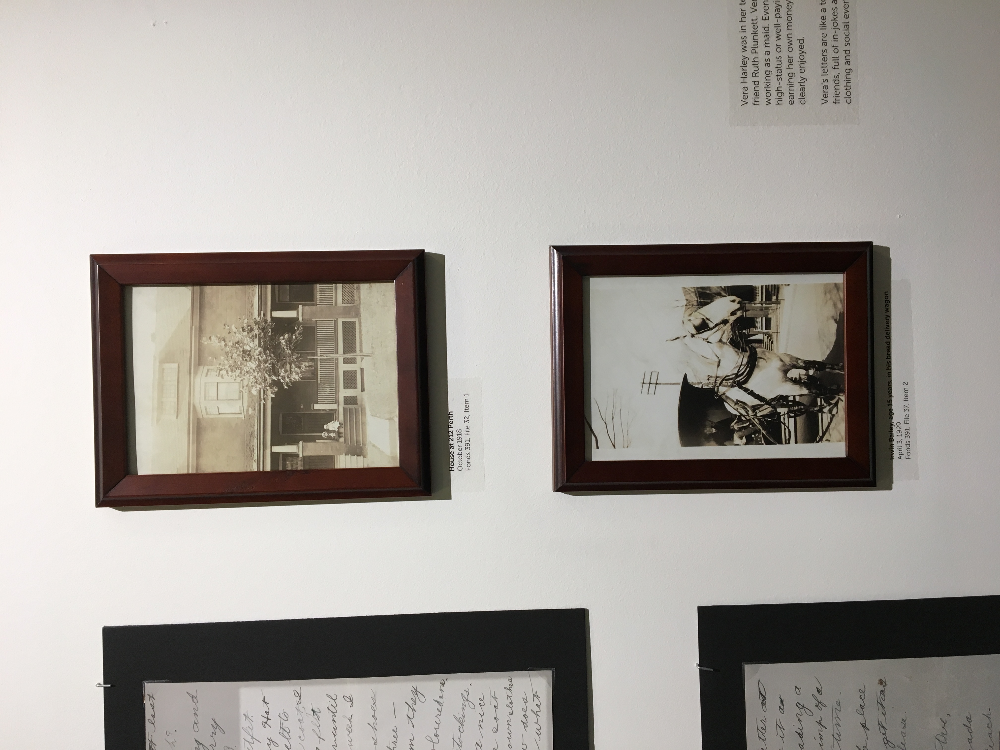
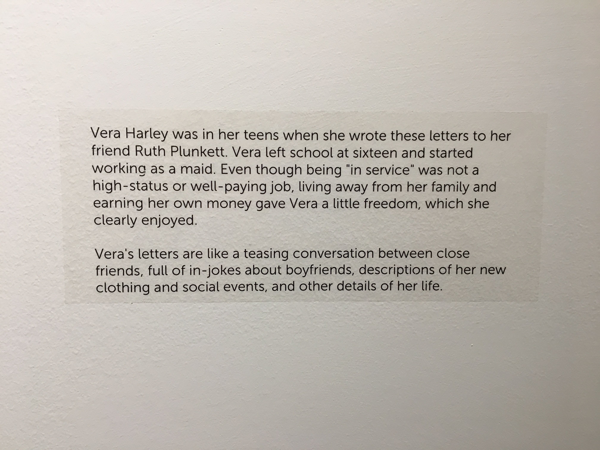

Displays at the Toronto Archives
Digital images.
EARLY ON THIS SEMESTER I paid a visit to the Toronto Archives—it wasn’t too helpful with the kind of research that I was hoping to do. There were an incredible amount of barriers (the ‘vibe’ was off) and the process to actually pull any boxes or make requests has a few days turnover. Seeing the space itself, you could quickly see just how many boxes were piled up¹ and additionally there are no photographic descriptors of objects or images that you could request to pull—just general descriptions and keywords. Below are some of the displayed images and letters at the archives:
      1. The Archive, Section 04, Folder B, Item 04.
ITEM CODE: 04.B.05.D